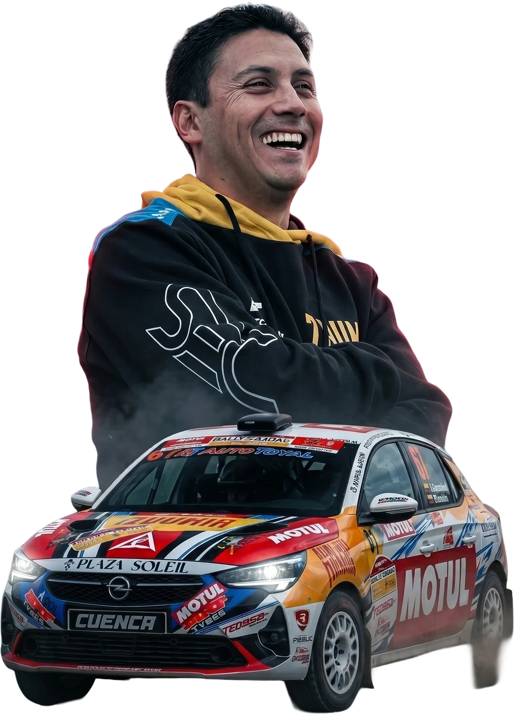
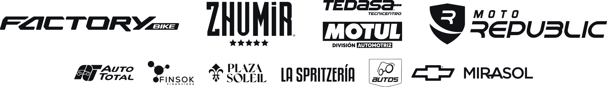

×Nueve meses de rally, circuitos y marcas contados en Instagram. Qué hicimos, qué funcionó y qué viene para la final del Nacional de Circuitos en Ambato.
Entre febrero y octubre la cuenta acompañó cada fecha con la misma secuencia (previa, carrera, resultado), sumó producciones con marcas que ya no se sienten publicidad y supo comunicar el golpe más duro del año, la baja del WRC Chile, con transparencia. Estos son los cuatro hallazgos que más pesan.
Resultados tomados de los textos publicados por Diego; no se contrastaron con la clasificación oficial de la federación.
Ecuador está listo para competir con los mejores del mundo
Del comunicado del WRC Chile (22 ago): el post más visto de los nueve meses, con 12.546 reproducciones.
Ambato, Gualaceo, Imbabura y Chimborazo. La sonrisa del arte Race Day de Imbabura resume la temporada: un piloto que gana, disfruta y lleva a sus marcas en cada foto. Ese carrusel abrió la fecha con 7.665 reproducciones.


Desliza la hoja de ruta. Cada tarjeta es un hito del año y abre las publicaciones que lo contaron.
Arte “Race Week / Race Day” con horarios y tramos, reconocimiento y parque de asistencia.
Onboard, dron, Diego hablando desde boxes e invitación a la carpa de los auspiciantes.
Carrusel de podio y reel resumen con agradecimiento a las marcas dentro del relato.
Onboards largos, FPV y piezas de marca que mantienen viva la fecha hasta la próxima.
Junio y abril fueron los meses más fuertes: coincidieron con fechas en casa (Gualaceo y Cañar), más publicaciones por fin de semana y producciones especiales. Toca una barra para ver el detalle.
La semana del Rally de Gualaceo (22–29 abr) trajo 64 seguidores nuevos, el 21% de todo lo que creció la cuenta en nueve meses. Los fines de semana de carrera en casa son el mejor momento para captar comunidad.
Promedio por publicación. El reel llega a más gente nueva; el carrusel de podio genera más interacción por persona.
Dale play. Cada una ganó en algo distinto: vistas, alcance, compartidos, engagement o integración de marca.
El equipo de Pro Motion revisó uno a uno los 34 videos y carruseles, imagen y audio: qué pasa, en qué etapa de la fecha está, si Diego habla, qué marcas aparecen y cómo. Abre cualquier pieza para leer su análisis.
Cuántas piezas muestra cada auspiciante y con qué profundidad. Amarillo = la marca es parte del relato; azul = mencionada o etiquetada; gris = solo su logo a la vista. Toca una marca para ver sus piezas.
Auto, traje y carpa. Está en casi todo: Motul aparece en 29 de 34 piezas analizadas; Tedasa y Zhumir, en 24.
Diego nombra a sus auspiciantes en el texto y en el resumen hablado de cada resultado (Cañar, Gualaceo).
La marca mueve la trama: el taxi de Don Paúl (Motul y Tedasa), el duelo con la Turbo Levo (Specialized), la D-Max subiendo a Turi (Mirasol Chevrolet), la pizza en la carpa (La Spritzería).
El concurso de copiloto Rally4 con Motul (7 oct) logró la mejor proporción de comentarios del periodo. Es el escalón al que apuntan las activaciones de Ambato.
Una estimación 100% orgánica para una marca auspiciante, construida con el rendimiento real de la cuenta de Diego entre febrero y octubre de 2026 (Metricool). Elige cuántas piezas y cómo aparece la marca.
Cómo se calcula: para cada formato usamos el rango entre la mediana y el promedio real de la cuenta (visualizaciones, alcance e interacciones). La exposición efectiva pondera las visualizaciones según la profundidad de integración que medimos en cada pieza (logo 35%, mención 60%, protagonista 100%). No incluye pauta, historias ni las publicaciones de terceros donde también aparece Diego. Es una referencia para planificar, no una garantía de resultados.
Además de su propio feed, Diego aparece en publicaciones de Motul Ecuador, del ACL Motorsport, de organizadores y de medios. Esa visibilidad no entra en las métricas de su cuenta, pero sí la ven sus marcas. Muestra encontrada en el perfil entre abril y octubre.
Seguidores al 21 de octubre. Una comunidad ecuatoriana, adulta y con poder de compra: el perfil que buscan lubricantes, autos, bebidas y talleres.
Sobre los seguidores que Instagram sí clasifica por género (912 quedan sin clasificar).
La gestión de la cuenta no fue solo publicar. Esto es lo que el equipo puso en marcha en el periodo.
Ocho fines de semana de competencia cubiertos en tres momentos: previa, carrera y resultado. 35 publicaciones en el feed.
Dron, FPV, onboard a doble pantalla y cámara 360. 24 de 34 piezas con producción de nivel alto.
Specialized (desierto), Motul y Tedasa (el taxi de Don Paúl y el concurso), Mirasol Chevrolet (D-Max en Turi y mitad de temporada).
Carpa Motul y Tedasa en Gualaceo con pizza de La Spritzería, premios y regalos, invitada desde el reel del día de carrera.
Artes “Race Week”, cronogramas de tramos, placas de resultados y logo DES aplicado en cierres de video.
El comunicado del WRC Chile: en vivo y en carrusel, con transparencia sobre el presupuesto. Fue lo más visto del año y abrió la puerta a nuevas marcas.
Los onboards con audio real (duelo en Cañar, pole, despiste en rally) están entre lo más visto y compartido. El FPV con música, en cambio, rinde menos.
Specialized (38 compartidos) y el taxi de Motul (22) superan a cualquier post de “gracias a mis auspiciantes”. La gente comparte historias, no logos.
Los carruseles promedian 8,4% de engagement frente a 6,5% de los reels. El de Chimborazo sumó 24 comentarios.
“Nunca es una carrera más”, con esposa, hijos y afición, superó las 6.900 reproducciones y 20 comentarios.
No hay registro de historias en el periodo. Para Ambato (menciones, concursos, colaboraciones) hay que medirlas: dejar el registro activo o guardar capturas de cada una.
+305 seguidores en nueve meses (+4,6%). Entre carreras la cuenta baja el ritmo (2 publicaciones en mayo y julio). Las colaboraciones con Motul, el ACL y los organizadores pueden traer seguidores nuevos todo el año.
En Salinas Diego escribió que esos puntos servían “para definir el campeonato en Ambato”. Es la última fecha de circuitos del año y la mejor excusa para pasar de que la gente nos mire a que la gente participe. Estas son las activaciones propuestas, listas para ejecutar.
Confirmar con Motul y Tedasa: cantidad de pizzas, aceites y gorras. Bases cortas del concurso. Datos de la pista con Diego.
Reel “Adivina el tiempo” en colaboración con @motulecu. Historia con cuenta regresiva y las tres dinámicas.
Recordatorio del concurso, arte Race Week de Ambato y encuesta “¿quién gana?”.
Cierra el concurso del tiempo a primera hora. Pizza por historia en la carpa. Foto del día. Cobertura en vivo.
Anuncio de ganadores, repost de las mejores fotos de la afición y reel de cierre de temporada.
